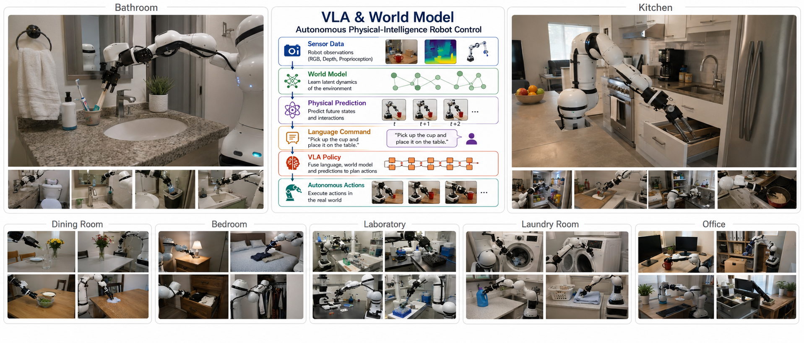
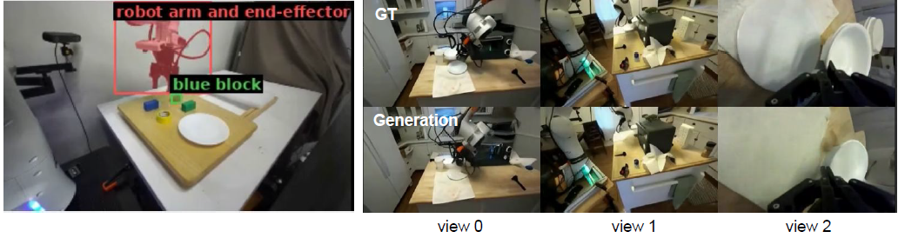
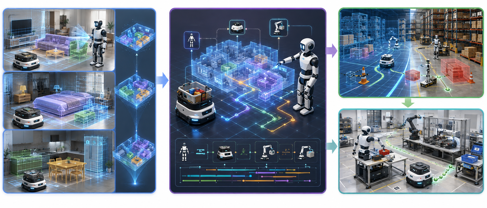

We study how robots can connect visual observations and language instructions to actions in the physical world. Our research brings together predictive world models, Vision-Language-Action models, and spatially grounded planning to make robot behavior more adaptable to changing tasks and environments.

Ongoing research
Robots need more than object recognition to perform a task: they must relate an instruction to the current scene and anticipate how their actions may change it. We investigate Vision-Language-Action (VLA) models alongside robot world models to connect perception, prediction, and action selection.
The demonstration below illustrates object/end-effector detection and generated observations compared with reference views. Our continuing work focuses on connecting these representations to robot control and evaluating prediction quality and task execution.
▶ Watch demo
Ongoing research project, 2026-2029
Moving an object between locations requires a robot team to understand where objects are, which robot can perform each step, and how those steps depend on one another. Our 3D Vision-Language-Planning (3D VLP) project investigates a shared spatial representation that supports this reasoning across heterogeneous robots.
This project connects our work in Spatial AI with language-guided robot planning. The roadmap below presents the intended development path from shared scene understanding to coordinated operation and simulation-to-real-world validation.
Related project: 3D VLP for heterogeneous robot teams
